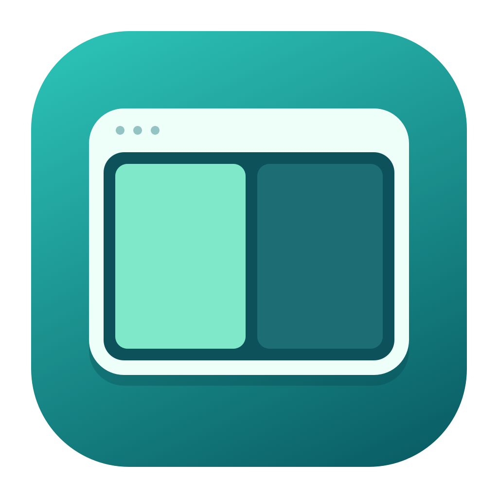

01
한 번, 절반으로
방향키가 가리키는 곳으로 창을 배치하세요. 왼쪽·오른쪽은 너비를, 위·아래는 높이를 나눕니다.
⌃⌥← ↑ ↓ →

WindowSnapA LITTLE UTILITY FOR YOUR MAC
한 번 누르면 절반. 두 번 누르면 1/3.
창을 끌어다 놓는 대신, 하던 일에 집중하세요.
⌃ + ⌥ + ←한 번으로, 딱 절반.
버튼을 눌러 체험하는 동작 예시입니다.
SMALL SHORTCUTS. BIG DIFFERENCE.
기본은 ⌃ Control + ⌥ Option + 방향키.
손에 익은 단축키가 있다면 설정에서 바꿀 수 있어요.
방향키가 가리키는 곳으로 창을 배치하세요. 왼쪽·오른쪽은 너비를, 위·아래는 높이를 나눕니다.
같은 단축키를 0.8초 안에 다시 누르세요. 조금 더 여백이 필요한 작업에 딱 맞는 크기입니다.
서로 직각인 방향을 0.8초 안에 이어 누르세요. 누른 두 방향이 가리키는 모서리로 창을 배치합니다.
Control + Option + Return으로 창을 넓게 펼치세요. 별도 전체 화면 Space로 이동하지 않습니다.
FITS INTO YOUR DAY
창이 가장 많이 걸쳐 있는 모니터를 기준으로 배치해요. Dock과 메뉴 막대 공간은 남겨둡니다.
방향과 최대화 키 조합을 각각 설정하고 저장하세요. 필요할 땐 메뉴 막대에서 잠시 멈출 수도 있어요.
처음 실행할 때 로그인 시 자동 실행을 등록해요. 언제든 앱 설정에서 끌 수 있습니다.
READY WHEN YOU ARE
ZIP을 풀고 WindowSnap을 응용 프로그램 폴더로 옮긴 뒤 실행하세요.
현재 배포본은 Apple Developer ID 서명 및 공증이 없는 임시 서명 앱입니다. 실행이 차단되면 출처를 확인한 뒤 시스템 설정 → 개인정보 보호 및 보안에서 ‘확인 없이 열기’를 선택하세요. Apple의 안내 ↗
시스템 설정 → 개인정보 보호 및 보안 → 손쉬운 사용에서 WindowSnap을 허용하세요. 이제 원하는 창을 선택하고 단축키를 누르면 됩니다.
일부 앱에는 자체 최소 창 크기가 있습니다. WindowSnap은 이 제한을 존중하며, 전체 화면 창이나 크기 변경이 불가능한 창은 배치할 수 없습니다.
임시 서명은 빌드마다 식별 요건이 달라질 수 있습니다. 손쉬운 사용 목록에서 이전 WindowSnap 항목을 제거하고, 현재 응용 프로그램 폴더의 앱을 다시 추가해 주세요.
메뉴 막대 → 설정에서 방향과 최대화 단축키를 바꿔 주세요. Command, Option, Control 중 하나 이상을 포함해야 하며, macOS가 예약한 단축키는 시스템 기능이 우선할 수 있습니다.